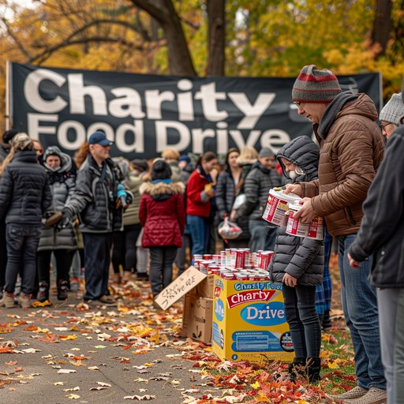
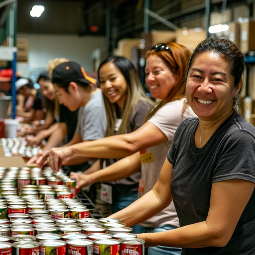
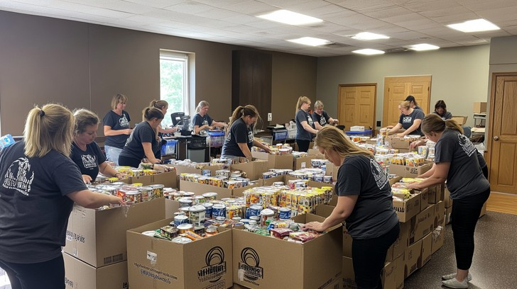

Gallery
Volunteers
Our volunteers are the heart of our foundation. They dedicate their time and energy to support our mission and make a difference in the lives of those we serve.



Community Programmes
Our community programmes are designed to address the needs of our local communities. We organize various initiatives to provide support, education, and resources to those in need.